Ask Docket
Ask questions about a document and get answers that cite the page they came from.


Docket gives legal, compliance and records teams one place to view, search, redact and release documents. It flags personal data for you, burns redactions into the file so nothing can be recovered, and logs every action.
Built for open-records requests, case-file expungement and any release where a missed social security number is a real problem.

Drop in scanned files or native PDFs and processing starts on its own.
Find what matters, and remove what shouldn't leave.
Send documents out without losing track of them.
Ask questions about a document and get answers that cite the page they came from.
Ask in plain language, for example to redact every account number, and confirm before anything is burned.
See why something was flagged and how confident the detection was before you decide.
Redactions are burned into the file itself, not laid over it as an overlay someone can remove.
Destroy a file and every copy derived from it, while keeping the record that it happened.
Put Docket inside your own web or desktop application through a postMessage contract.
| Area | Legacy Windows viewer | Docket |
|---|---|---|
| Rendering | Fixed-resolution raster images | Vector rendering, sharp at any zoom |
| Redaction | Overlays that can be removed | Burned into the file, nothing left to recover |
| Platform | Windows Server only | Windows, Linux, macOS or Docker |
| Integration | Tied to one application | Embeds in any web or desktop app |
Tell us what you release and how you redact today. We'll show you Docket working on files like yours.